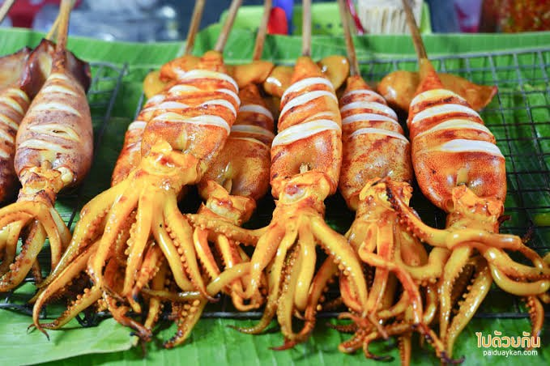
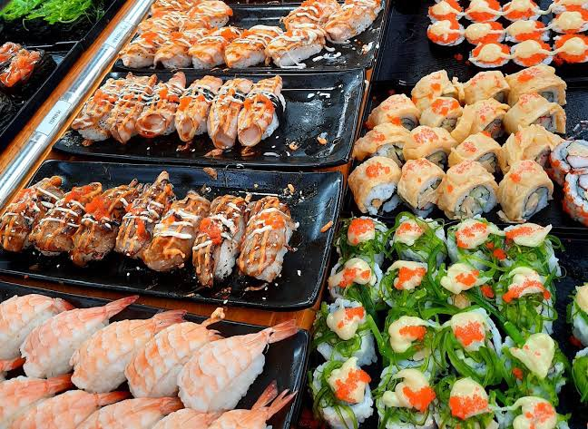
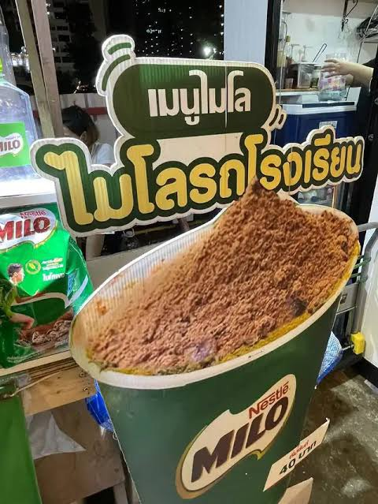

ร้านหมึกย่างตัวโต

ปลาหมึกย่างอร่อยๆ พร้อมสูตรหมักปลาหมึกให้มีสีเหลืองน่ารับประทาน และที่สำคัญเนื้อไม่เหนียว ย่างหอมๆ สีสวยอร่อย พร้อมสูตรน้ำจิ้มปลาหมึกย่างแซ่บๆ
ร้านซูชิคำโต

ร้านอาหารญี่ปุ่นเกรดพรีเมี่ยม คัดสรรวัตถุดิบนำเข้าชั้นดี คำใหญ่ ราคานักเรียนที่สำคัญรสชาติไม่เป็นสองรองใคร
ร้านไมโลรถโรงเรียน

วันวานยังหวานอยู่ อากาศร้อนๆ แบบนี้หลายๆ คนคงคิดถึงเมนูเครื่องดื่มในตำนาน สมัยยังวิ่งเล่นอยู่ในโรงเรียนอย่างเมนูไมโลเย็นใช่มั้ยล่ะคะ